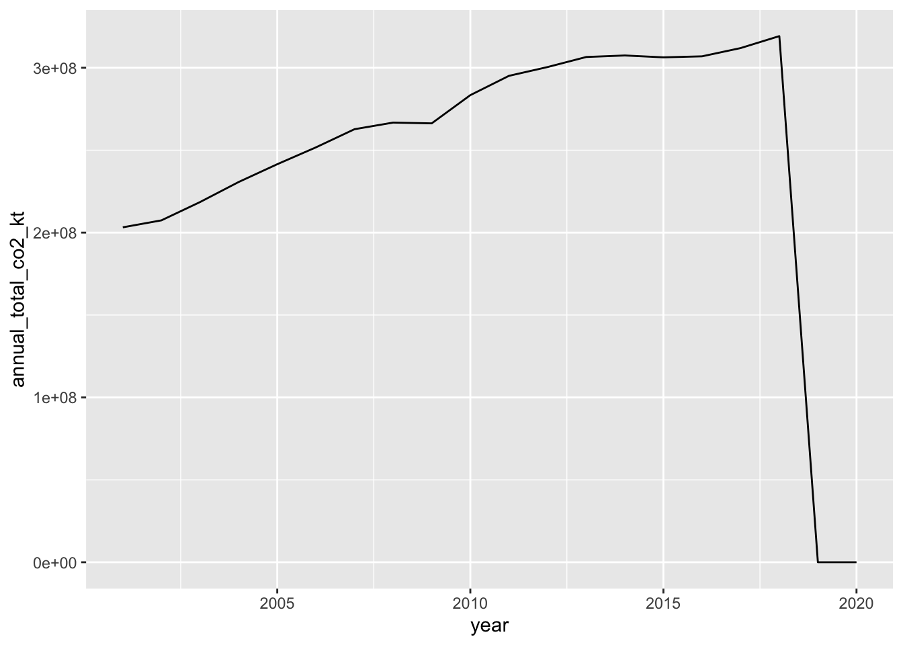

knitr::opts_chunk$set(echo = TRUE, warning = FALSE, message = FALSE)
library(tidyverse)
library(here)
library(janitor)Part 0: Setup
Session key
Note: Both R and Python code are shown below in one place for simplicity. You will be running the R code in R Markdown, and the Python code in Jupyter Notebooks. The individual keys (.Rmd and .ipynb) are in the session repo.
Setup
- Fork and clone this repo containing the Day 6 materials
- Open the project in RStudio
- Familiarize yourself with the package structure
- Create a new .Rmd, save as ‘day6-wrangling-tidyverse.Rmd’
- In the setup chunk, attach the
tidyverse,here, andjanitorpackages
- Open Anaconda, launch Jupyter Notebooks
- Create a new Jupyter Notebook
- Save in your new R Project root as ‘day6-wrangling-pandas.ipynb’
- In a new code chunk, import
pandaswithimport pandas as pd
We’ll be switching back and forth between R Markdown and Jupyter Notebooks today to do some basic data wrangling in dplyr and pandas. Remember: Cmd + Tab to switch between applications.
In your .Rmd, attach R packages:
In your .ipynb, attach Python packages:
# Don't forget pandas
# Note: if ModuleNotFoundError: No module named 'pandas', install pandas!
# Install in Terminal: pip install pandas
import pandas as pdData source
Data for these examples are from:
- The World Bank World Development Indicators
Part 1. Read in the two data files
The data files we’ll use today are in the data subfolder of the project. They are:
wb_indicators.csv: a CSV containing data for select development indicators for countries in the World Bank database, from 2001 - 2020wb_indicators_metadata.csv: a CSV containing metadata information for the development indicators
In R:
wb_indicators <- read_csv(here("data", "wb_indicators.csv"), na = c("..", ""))
wb_metadata <- read_csv(here("data", "wb_indicators_metadata.csv"))In Python:
wb_indicators = pd.read_csv('data/wb_indicators.csv', na_values = c("..", ""))
wb_metadata = pd.read_csv('data/wb_indicators_metadata.csv')Take a look
ALWAYS ALWAYS ALWAYS look at what you’ve done.
Part 1: reshaping and tidying basics
Wide-to-long
We see that years - a single variable - is spread out over multiple columns. We’ll want to reshape this data frame from wide-to-long format so that year is only in a single column to make it Tidy.
In R: tidyr::pivot_longer()
wb_indicators_long <- wb_indicators %>%
pivot_longer(cols = '2001 [YR2001]':'2020 [YR2020]', # Which columns to squish
names_to = "year", # The original column names are squished into this column
values_to = "indicator_value") # The values are correctly aligned in this column
# Check it out (always):
# View(wb_indicators_long) # Why do I comment this out or run it in the Console? In Python (pandas): melt()
wb_indicators_long = wb_indicators.melt(id_vars = ['Country Name', 'Country Code', 'Series Name', 'Series Code'],
var_name = 'year',
value_name = 'indicator_value')
# Check it out:
wb_indicators_long.head<bound method NDFrame.head of Country Name ... indicator_value
0 Afghanistan ... 9.51
1 Afghanistan ... NaN
2 Afghanistan ... 810.00
3 Afghanistan ... NaN
4 Afghanistan ... NaN
... ... ... ...
26695 NaN ... NaN
26696 NaN ... NaN
26697 NaN ... NaN
26698 Data from database: World Development Indicators ... NaN
26699 Last Updated: 07/21/2021 ... NaN
[26700 rows x 6 columns]># Check the dimensions:
wb_indicators_long.shape(26700, 6)Cleaning that year column up…
We can see that the year is stored in a weird format (e.g. 2018 [YR2018]) that’s going to make our life difficult if we want to, for example, use year as a number to plot changes in the indicator values over time.
Let’s separate the information in the year column so that we can just keep the nice 4-digit year as a number.
In R: tidyr::separate()
wb_data_clean <- wb_indicators_long %>%
tidyr::separate(col = year, into = c("year", "year_chr"), sep = " ") %>%
dplyr::select(-year_chr, -'Country Code', -'Series Code') # This drops a few redundant columns (caution here...best to leave things if you're not sure)
head(wb_data_clean)# A tibble: 6 × 4
`Country Name` `Series Name` year indicator_value
<chr> <chr> <chr> <dbl>
1 Afghanistan Access to clean fuels and technologies f… 2001 9.51
2 Afghanistan Access to clean fuels and technologies f… 2002 10.4
3 Afghanistan Access to clean fuels and technologies f… 2003 11.5
4 Afghanistan Access to clean fuels and technologies f… 2004 12.4
5 Afghanistan Access to clean fuels and technologies f… 2005 13.5
6 Afghanistan Access to clean fuels and technologies f… 2006 14.8 In pandas: str.split()
wb_indicators_long[['year','year_chr']] = wb_indicators_long.year.str.split(expand=True)
list(wb_indicators_long) # Cool, now there's year and year_chr['Country Name', 'Country Code', 'Series Name', 'Series Code', 'year', 'indicator_value', 'year_chr']# Let's also drop some variables we won't use:
wb_data_clean = wb_indicators_long.drop(['Country Code', 'Series Code', 'year_chr'], axis = 1)
list(wb_data_clean)['Country Name', 'Series Name', 'year', 'indicator_value']Convert indicators to variables (long to wide)
Our data still aren’t quite tidy! Why?
Notice that we have multiple variables that were measured (our different indicators) all in a single column. This is a scenario where there are multiple variables in a single column. To be Tidy, we want each variable to live in just one column.
In R: tidyr::pivot_wider()
That means we’re going to need to widen this data. We’ll do that using tidyr::pivot_wider().
wb_data_tidy <- wb_data_clean %>%
tidyr::drop_na('Series Name') %>%
tidyr::pivot_wider(names_from = 'Series Name', values_from = indicator_value) # Pivot to wide format
head(wb_data_tidy)# A tibble: 6 × 7
`Country Name` year Access to clean fuels and techno…¹ Access to electricit…²
<chr> <chr> <dbl> <dbl>
1 Afghanistan 2001 9.51 NA
2 Afghanistan 2002 10.4 NA
3 Afghanistan 2003 11.5 NA
4 Afghanistan 2004 12.4 NA
5 Afghanistan 2005 13.5 22.3
6 Afghanistan 2006 14.8 28.1
# ℹ abbreviated names:
# ¹`Access to clean fuels and technologies for cooking (% of population)`,
# ²`Access to electricity (% of population)`
# ℹ 3 more variables: `CO2 emissions (kt)` <dbl>,
# `Fossil fuel energy consumption (% of total)` <dbl>,
# `Level of water stress: freshwater withdrawal as a proportion of available freshwater resources` <dbl>In python:
wb_data_tidy = wb_data_clean.pivot_table(index = ['Country Name', 'year'],
columns = 'Series Name',
values = 'indicator_value')
# Indexes back to normal column entries:
wb_data_tidy = wb_data_tidy.reset_index()
# Check the data frame now:
wb_data_tidy.head() # I feel better.Series Name Country Name ... Level of water stress: freshwater withdrawal as a proportion of available freshwater resources
0 Afghanistan ... NaN
1 Afghanistan ... 54.757019
2 Afghanistan ... NaN
3 Afghanistan ... NaN
4 Afghanistan ... NaN
[5 rows x 7 columns]
wb_data_tidy.head()Series Name Country Name ... Level of water stress: freshwater withdrawal as a proportion of available freshwater resources
0 Afghanistan ... NaN
1 Afghanistan ... 54.757019
2 Afghanistan ... NaN
3 Afghanistan ... NaN
4 Afghanistan ... NaN
[5 rows x 7 columns]Renaming columns
Our column names are now a nightmare. We can reassign all names as follows (in this order):
names(wb_data_tidy) <- c("country", "year", "access_clean_fuels_pp", "access_electricity_pp", "co2_emissions_kt", "fossil_fuel_cons_pt", "water_stress")
head(wb_data_tidy)# A tibble: 6 × 7
country year access_clean_fuels_pp access_electricity_pp co2_emissions_kt
<chr> <chr> <dbl> <dbl> <dbl>
1 Afghanistan 2001 9.51 NA 810
2 Afghanistan 2002 10.4 NA 1100
3 Afghanistan 2003 11.5 NA 1350
4 Afghanistan 2004 12.4 NA 1130
5 Afghanistan 2005 13.5 22.3 1640
6 Afghanistan 2006 14.8 28.1 1940
# ℹ 2 more variables: fossil_fuel_cons_pt <dbl>, water_stress <dbl>Or, we’ll learn how to use dplyr::rename() soon…
Renaming in python with df.rename():
wb_data_tidy = wb_data_tidy.rename(columns = {'Country Name': 'country', 'Access to clean fuels and technologies for cooking (% of population)': 'access_fuels_pp',
'Access to electricity (% of population)': 'access_electricity_pp',
'CO2 emissions (kt)': 'co2_emissions_kt',
'Fossil fuel energy consumption (% of total)': 'fossil_fuel_consumption_pt',
'Level of water stress: freshwater withdrawal as a proportion of available freshwater resources': 'water_stress'})
wb_data_tidy.head()Series Name country year ... fossil_fuel_consumption_pt water_stress
0 Afghanistan 2001 ... NaN NaN
1 Afghanistan 2002 ... NaN 54.757019
2 Afghanistan 2003 ... NaN NaN
3 Afghanistan 2004 ... NaN NaN
4 Afghanistan 2005 ... NaN NaN
[5 rows x 7 columns]End wrangling session 1
Part 2: More data wrangling with dplyr
dplyr::filter()
Use dplyr::filter() to keep or exclude rows based on your conditions.
Some examples:
I only want to keep observations from the dataset above for “United States”:
us_wb <- wb_data_tidy %>%
filter(country == "United States")
head(us_wb)# A tibble: 6 × 7
country year access_clean_fuels_pp access_electricity_pp co2_emissions_kt
<chr> <chr> <dbl> <dbl> <dbl>
1 United Sta… 2001 100 100 5749250
2 United Sta… 2002 100 100 5594160
3 United Sta… 2003 100 100 5659630
4 United Sta… 2004 100 100 5740030
5 United Sta… 2005 100 100 5756080
6 United Sta… 2006 100 100 5656580
# ℹ 2 more variables: fossil_fuel_cons_pt <dbl>, water_stress <dbl>This example in python:
wb_data_tidy[(wb_data_tidy['country'] == "United States")]I want to keep observations if the country is “United States” OR “Mexico” OR “Brazil”:
us_mx_bz <- wb_data_tidy %>%
filter(country %in% c("United States", "Mexico", "Brazil"))
unique(us_mx_bz$country)[1] "Brazil" "Mexico" "United States"This example in python:
wb_data_tidy[(wb_data_tidy['country'] == "United States") | (wb_data_tidy['country'] == "Mexico") | (wb_data_tidy['country'] == "Brazil")]I want to keep observations if the country is “Guatemala” OR the year is 2020:
guatemala_or_2020 <- wb_data_tidy %>%
filter(country == "Guatemala" | year == 2020)I want to keep observations in the year is 2010 and CO2 emissions is greater than 10,000kt:
co2_2010_over10k <- wb_data_tidy %>%
filter(year == 2010, co2_emissions_kt > 10000)dplyr::select()
Select (or exclude) columns using dplyr::select(). Put a minus sign (-) in front of a column name or position to exclude it.
nicaragua_co2 <- wb_data_tidy %>%
filter(country == "Nicaragua") %>%
select(year, co2_emissions_kt)Exclude the water_stress and access_electricity_pp columns:
wb_subset <- wb_data_tidy %>%
select(-c(water_stress, access_electricity_pp))Some examples of selecting / excluding columns in python:
# Keep columns country, year, and co2_emissions_kt
wb_data_tidy[['country','year','co2_emissions_kt']]
# Exclude column access_fuels_pp
wb_data_tidy.drop('access_fuels_pp', axis = 1) # axis = 1 here indicates drop COLUMN (0 = rows)dplyr::rename()
Use dplyr::rename() to rename one or more columns, in the order new_name = old_name.
wb_newnames <- wb_data_tidy %>%
rename(elec = access_electricity_pp, co2 = co2_emissions_kt)dplyr::mutate()
Use dplyr::mutate() to add a new column, or transform an existing one.
Example: to change the class of a variable (careful - this overwrites the existing column!)
# Check the class of year:
class(wb_data_tidy$year) # Character! Let's change it. [1] "character"wb_data_tidy <- wb_data_tidy %>%
mutate(year = as.numeric(year))
# Check again:
class(wb_data_tidy$year)[1] "numeric"Example: Add a new column that has co2 in TONS (instead of kilotons):
wb_co2_tons <- wb_data_tidy %>%
mutate(co2_tons = co2_emissions_kt * 1000)
head(wb_co2_tons)# A tibble: 6 × 8
country year access_clean_fuels_pp access_electricity_pp co2_emissions_kt
<chr> <dbl> <dbl> <dbl> <dbl>
1 Afghanistan 2001 9.51 NA 810
2 Afghanistan 2002 10.4 NA 1100
3 Afghanistan 2003 11.5 NA 1350
4 Afghanistan 2004 12.4 NA 1130
5 Afghanistan 2005 13.5 22.3 1640
6 Afghanistan 2006 14.8 28.1 1940
# ℹ 3 more variables: fossil_fuel_cons_pt <dbl>, water_stress <dbl>,
# co2_tons <dbl>This example with df.assign() in python:
co2_tons = wb_data_tidy.assign(co2_t = wb_data_tidy['co2_emissions_kt'] * 1000)dplyr::group_by() %>% summarize()
To perform one or more functions on data by group, returning a nice summary table, use group_by + summarize().
Example: find the total reported co2 emissions (kt) for 2001 - 2020 from each country:
co2_total <- wb_data_tidy %>%
group_by(country) %>%
summarize(total_co2_kt = sum(co2_emissions_kt, na.rm = TRUE))This example (group_by summarize) in python with df.groupby.agg:
co2_sum = wb_data_tidy.groupby('country')['co2_emissions_kt'].agg(['sum'])Example: find the total co2 emissions (kt) across all country for each year from 2001 - 2020:
co2_annual <- wb_data_tidy %>%
group_by(year) %>%
summarize(annual_total_co2_kt = sum(co2_emissions_kt, na.rm = TRUE))
# Let's plot this for fun:
ggplot(data = co2_annual, aes(x = year, y = annual_total_co2_kt)) +
geom_line()
# Always look. What is happening here? Always always always look at your data. Part 3: Putting things together
We’ve learned a bunch of different useful functions for data wrangling in the {tidyverse}. But this may still feel a bit tedious.
Often, for readability and efficiency, we may want to string together different steps into a sequence. We can do that using the pipe operator (%>% in the tidyverse, or |> is the sparkly new native pipe in R).
Let’s take our raw data that we initially read in:
head(wb_indicators)# A tibble: 6 × 24
`Country Name` `Country Code` `Series Name` `Series Code` `2001 [YR2001]`
<chr> <chr> <chr> <chr> <dbl>
1 Afghanistan AFG Access to clean f… EG.CFT.ACCS.… 9.51
2 Afghanistan AFG Access to electri… EG.ELC.ACCS.… NA
3 Afghanistan AFG CO2 emissions (kt) EN.ATM.CO2E.… 810
4 Afghanistan AFG Fossil fuel energ… EG.USE.COMM.… NA
5 Afghanistan AFG Level of water st… ER.H2O.FWST.… NA
6 Albania ALB Access to clean f… EG.CFT.ACCS.… 42.7
# ℹ 19 more variables: `2002 [YR2002]` <dbl>, `2003 [YR2003]` <dbl>,
# `2004 [YR2004]` <dbl>, `2005 [YR2005]` <dbl>, `2006 [YR2006]` <dbl>,
# `2007 [YR2007]` <dbl>, `2008 [YR2008]` <dbl>, `2009 [YR2009]` <dbl>,
# `2010 [YR2010]` <dbl>, `2011 [YR2011]` <dbl>, `2012 [YR2012]` <dbl>,
# `2013 [YR2013]` <dbl>, `2014 [YR2014]` <dbl>, `2015 [YR2015]` <dbl>,
# `2016 [YR2016]` <dbl>, `2017 [YR2017]` <dbl>, `2018 [YR2018]` <dbl>,
# `2019 [YR2019]` <dbl>, `2020 [YR2020]` <lgl>Let’s tidy this up in a single sequence, with the pipe operator between.
REMEMBER: Look at what you’ve done after every step in a sequence.
wb_tidy <- wb_indicators %>%
tidyr::pivot_longer(cols = `2001 [YR2001]`:`2020 [YR2020]`,
names_to = "year",
values_to = "indicator_value") %>%
tidyr::separate(col = year, into = c("year", "year_chr"), sep = " ") %>%
dplyr::select(-'Country Code', -'Series Code', -year_chr) %>%
tidyr::drop_na('Series Name') %>%
tidyr::pivot_wider(names_from = 'Series Name', values_from = 'indicator_value') %>%
dplyr::rename(country = 'Country Name',
year = 'year',
clean_fuels = 'Access to clean fuels and technologies for cooking (% of population)',
access_elec = 'Access to electricity (% of population)',
co2 = 'CO2 emissions (kt)',
fossil_fuels = 'Fossil fuel energy consumption (% of total)',
water_stress = 'Level of water stress: freshwater withdrawal as a proportion of available freshwater resources') %>%
dplyr::mutate(year = as.numeric(year))
# Recall you can get the names of columns easily using names(df)Some questions: How long should a piped sequence be before I store the output and start a new piped sequence? Can a piped sequence be too long? Can I always pipe into everything?